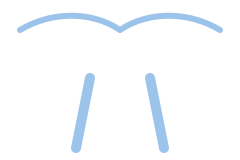
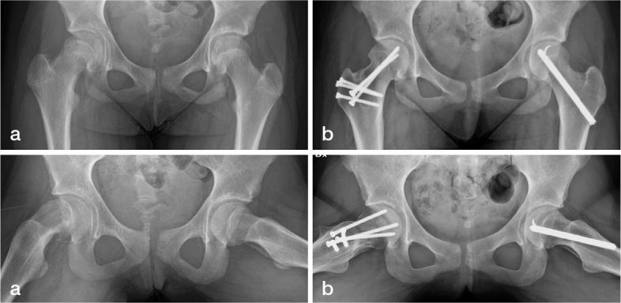
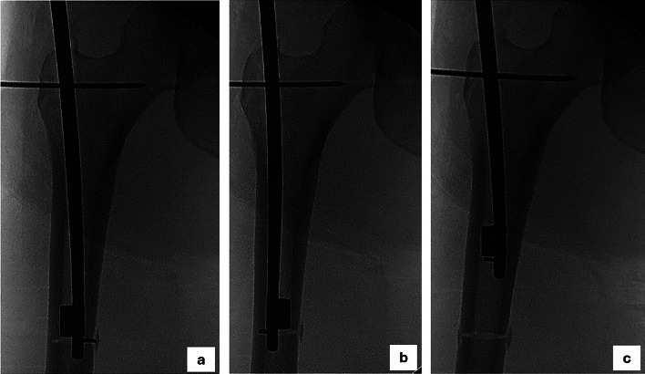

Preservação do quadril no jovem
Quando a parte de cima do fêmur cresce ou se refaz com um formato alterado, o quadril pode doer e desgastar cedo. A osteotomia corrige esse formato no próprio osso do paciente, sem prótese.

Entenda
Osteotomia quer dizer corte planejado do osso. O cirurgião corta o fêmur perto do quadril, muda a posição de um dos fragmentos e o fixa com placa, parafusos ou haste até o osso consolidar (colar de novo).
O objetivo é devolver à cabeça do fêmur uma posição mais próxima do normal dentro do acetábulo (a "concha" da bacia), para diminuir o choque entre os ossos e a sobrecarga sobre a cartilagem. É uma cirurgia de preservação: busca adiar ou evitar o desgaste, e não substitui a articulação.
Indicações
Na epifisiólise, a cabeça do fêmur escorrega sobre a placa de crescimento durante a adolescência. Quando o escorregamento é moderado ou grave, fica uma deformidade que faz o colo do fêmur bater na borda do acetábulo, e é nesse grupo que as osteotomias costumam ser discutidas.
Na doença de Perthes a cabeça do fêmur da criança perde circulação e depois se refaz, às vezes achatada e larga, com o colo curto e o trocânter maior (a saliência óssea do lado da coxa) alto. Isso pode causar dor, limitação de movimento e mancar na vida adulta jovem.
São alterações do ângulo entre o colo e o corpo do fêmur: na coxa vara o ângulo está fechado demais, na coxa valga está aberto demais. A osteotomia valgizante (que abre o ângulo) é o tratamento estudado para a coxa vara do desenvolvimento.
No impacto, o formato do fêmur faz os ossos se encostarem ao dobrar e girar o quadril. Em parte dos jovens com dor, o fêmur também é torcido demais para dentro ou para fora (alteração da "versão"); nesses casos pode-se discutir a osteotomia derrotativa, que gira o fêmur para uma posição mais neutra.
Técnicas
A escolha depende da doença, da idade, do tamanho da deformidade e do estado da cartilagem. Cada caso é discutido individualmente.
O corte é feito abaixo do colo, na região dos trocânteres (as saliências ósseas logo abaixo do colo do fêmur). Gira-se o fragmento para reposicionar a cabeça. Na epifisiólise é conhecida como osteotomia de Imhäuser; na coxa vara, como osteotomia valgizante. A correção é indireta: melhora a posição, mas não refaz a anatomia do colo.
Na luxação cirúrgica do quadril, o cirurgião tira a cabeça do fêmur do acetábulo de forma controlada, protegendo os vasos que a nutrem. Isso permite corrigir a deformidade no lugar onde ela está:


Recuperação
O osso cortado precisa consolidar. Por isso, nas primeiras semanas a carga sobre a perna operada costuma ser limitada, e a liberação é orientada pelo cirurgião. Em um estudo com 124 osteotomias derrotativas em adolescentes, o tempo até a liberação da carga foi de cerca de 15,7 semanas com placa e 9,5 semanas com haste10.
A fisioterapia ajuda a recuperar movimento e força. A volta à escola, ao trabalho e ao esporte é gradual e varia de pessoa para pessoa. É comum que o material de fixação seja retirado depois, numa cirurgia menor: numa série de adultos operados de derrotação, 78% dos quadris tiveram uma segunda cirurgia, na grande maioria (91%) para retirar o material9.
Evidência
A maior parte dos estudos é retrospectiva (analisa casos já operados, olhando para trás), com poucos pacientes. Os números abaixo descrevem grupos estudados e não são garantia de resultado individual.
A indicação, a técnica e o momento da cirurgia são decisão do médico assistente, tomada junto com o paciente e a família depois do exame e das imagens.
Informação educativa. Não substitui a consulta: cada caso é avaliado individualmente.
← Voltar à página inicial